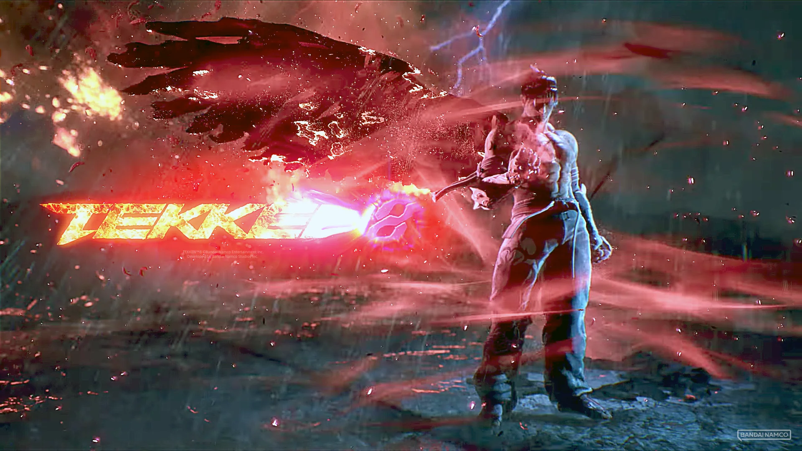
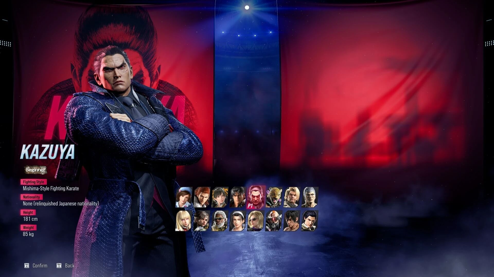
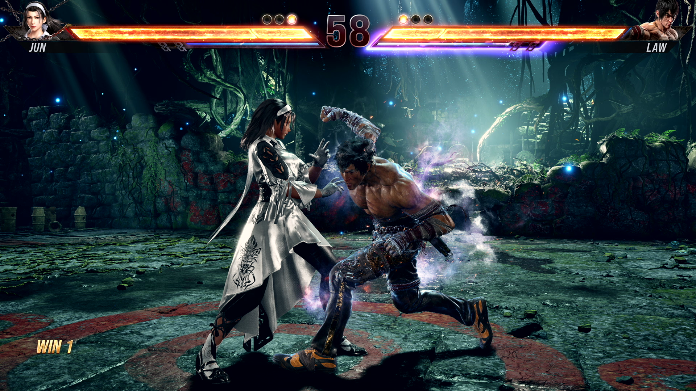

Tekken 8: Laadukasta turpasaunaa

Tekken 8 vie pelaajat jälleen kerran mukaansa eeppiseen taistelun maailmaan, tarjoten vauhdikasta ja syvällistä pelattavuutta, joka on tehnyt sarjasta legendaarisen. Peli tarjoaa upean pelikokemuksen, jossa monipuoliset liikkeet ja strategiat pitävät pelaajat haasteen äärellä.

Pelin taistelumekaniikka on huippuluokkaa, tarjoten monipuolisia liikkeitä ja strategioita, jotka pitävät pelaajat kiinnostuneina. Jokainen hahmo tuntuu uniikilta ja tarjoaa pelaajille mahdollisuuden löytää oma tyylinsä ja taktiikkansa. Lisäksi, pelin grafiikka ja äänimaailma ovat upeita, luoden vaikuttavan ja immersiivisen pelikokemuksen.

Tekken 8 on myös erittäin sosiaalinen peli, joka kannustaa pelaajia kilpailemaan toisiaan vastaan moninpelitiloissa ja verkossa. Tämä lisää pelin jatkuvaa viehätystä ja antaa sille pitkän elinkaaren pelaajien keskuudessa.